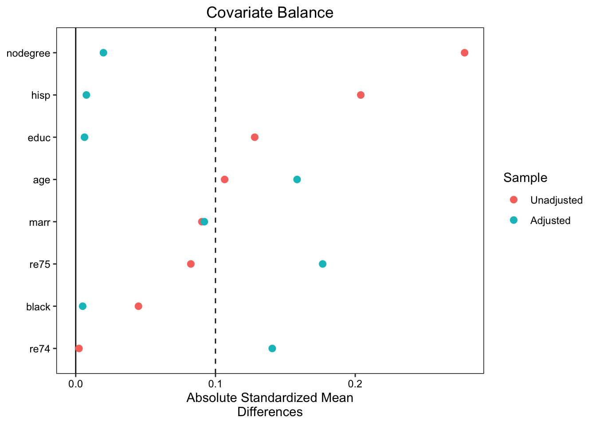
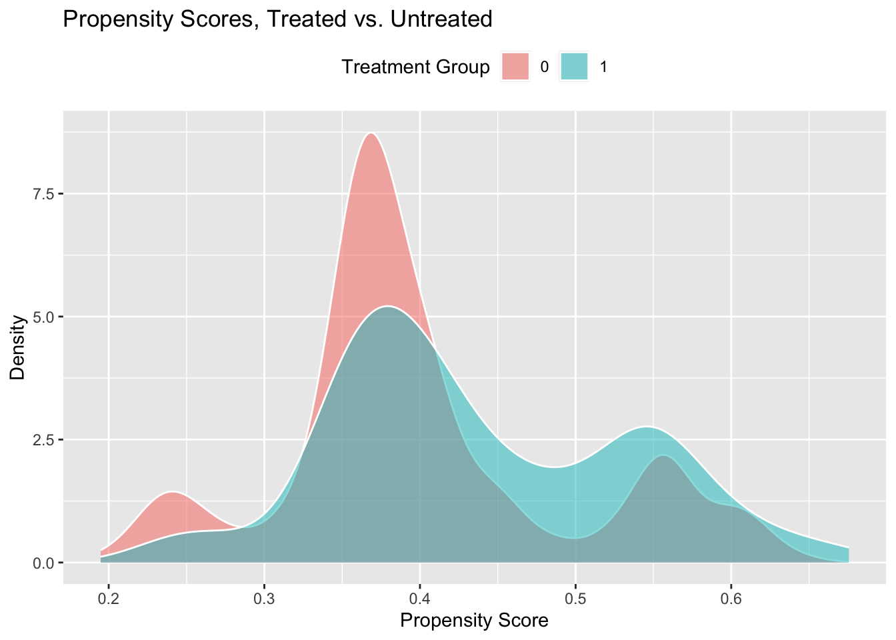

library(tidyverse)
library(here)
library(Matching)
library(MatchIt)
library(cobalt)
options(scipen = 999)Homework 03
Part (1)
(1)
(a)
We take the number of treated cases in each category, then divide by the number of control cases in each category respectively:
Control group left-handed weights: \(\frac{6}{10}=0.6\)
Control group right-handed weights: \(\frac{90}{88}=1.0227\)
Control group ambidextrous weights: \(\frac{4}{2}=2\)
(b)
We take the number of control cases in each category, then divide by the number of treated cases in each category respectively (essentially taking the reciprocal of the weights we used in (a):
Treated group left-handed weights: \(\frac{10}{6}=1.6666\)
Treated group right-handed weights: \(\frac{88}{90}=0.9777\)
Treated group ambidextrous weights: \(\frac{2}{4}=0.5\)
(c)
Now we take the number of treated cases in each category and multiply by the weight:
Left-handed: \(6*1.666=10\%\)
Right-handed: \(90*0.9777=88\%\)
Ambidextrous: \(4*0.5=2\%\)
(d)
We multiply the proportion of each treated case by the average given, then sum to
Left-handed: 0.10 x 7
Right-handed: 0.88 x 6
Ambidextrous: 0.02 x 4
print(paste0("Average of penmanship of treated group: ", 0.1*7+0.88*6+0.02*4))[1] "Average of penmanship of treated group: 6.06"(2)
(a)
(B) will produce more bias than (A) because we are increasing the number of matches. As we include more matches, they are likely to have values further from the value of the treated unit (second-best match, third-best match, etc.), so we have increased bias.
(b)
Again, using a relatively wide bandwidth (A) will increase the number of cases matched, which increases the bias compared to using a relatively narrow band because the matches will be less similar to the treated case.
(c)
Selecting matches without replacement (B) will introduce more bias. This is because the best matches that are closest in value to multiple treated cases cannot be reused, so the matching will use less-preferred matches from the remaining potential control pool.
(d)
(B) will introduce more bias typically because depending on the weights, more controls that are worse matches may be used.
(3)
When we do exact matching, we have to find potential control units that have the exact values of the treated units in for variable we are matching on. With coarsened exact matching, the values have to be within a specific range. Therefore, the likelihood of finding matches for every unit is decreasing is sample size and increasing in the number of variables we match on. However, increasing the sample sizes makes it more likely that potential control units will have values that match those of the treated. Likewise, decreasing the number of matching variables will also increases the likelihood of finding exact matches because we are being less restrictive.
(4)
(d) is the main downside of using propensity score matching instead of other matching methods. If we misspecify the model that estimates our propensity score, then our matches may have more bias than other matching methods and not close the back door. For example, we may incorrectly assume a linear functional form between a covariate and the treatment which is not representative of the true relationship (rather than a functional form with a higher order polynomial).
(5)
(a)
For the treated business retail group in the 1-5 number of employees range, common support fails because there are no appropriate control observations to match.
(b)
No, this is not a problem because we are matching in order to estimate the average treatment effects on the treated (ATT), but in this case there is no treatment effect. If we were trying to measure the ATE however, then we would not be able to because we would need to have common support in both directions and we have no treated observations to match the control units.
(c)
With only one untreated unit for this combination of industry and number of employees, we would be estimating the treatment effect for five times as many treated units as control units. Because of sampling bias, it’s possible the one control unit is an outlier, so making inference with only one control observation is unwise. We also can’t see any variability within this group - we have high variance and our estimate is imprecise.
(d)
Now the parameter of interest has changed - we wanted to estimate the ATT for all of the treated businesses, but we are estimating the average treatment effect on the treated for a subset: retail with 6-20 employees and service with 1-20 employees. Now any analysis would tell us nothing about the group that we dropped, so we cannot generalize our results to all businesses.
(6)
The ATC and ATT differ in which group we use to as the base group and which one we use to construct the counterfactual.
The ATT is trying to find the average treatment effect for the group that was treated. We can also look at the ATE as the effect of taking away treatment for the treated groups \(E[Y^1 - Y^0 | T = 1]\). We know \(Y^1\), so we need to find control matches that were untreated that act as the counterfactual \(Y^0\).
The ATC is estimating the average effect of adding treatment to units that were untreated (also) \(E[Y^1 - Y^0 |T = 0]\). Now, we have \(Y^0\) and we need to find treated units that match our untreated baseline units to act as the counterfactual \(Y^1\).
Part (2)
(1)
d <- read_rds(here("homework_03_files", "nsw_mixtape.rds"))(2)
(a)
d$weight <- 1(b)
out <- lm(data = d, re78 ~ treat, weights = weight)
summary(out)
Call:
lm(formula = re78 ~ treat, data = d, weights = weight)
Residuals:
Min 1Q Median 3Q Max
-6349 -4555 -1829 2917 53959
Coefficients:
Estimate Std. Error t value Pr(>|t|)
(Intercept) 4554.8 408.0 11.162 < 0.0000000000000002 ***
treat 1794.3 632.9 2.835 0.00479 **
---
Signif. codes: 0 '***' 0.001 '**' 0.01 '*' 0.05 '.' 0.1 ' ' 1
Residual standard error: 6580 on 443 degrees of freedom
Multiple R-squared: 0.01782, Adjusted R-squared: 0.01561
F-statistic: 8.039 on 1 and 443 DF, p-value: 0.004788(c)
tbl_bal <-
d |>
dplyr::select(treat: weight)
tbl <- tbl_bal |>
pivot_longer(cols = 2:10, names_to = "vars", values_to = "values") |>
group_by(treat, vars) |>
summarize(mean = weighted.mean(values),
sd = sd(values)) |>
arrange(vars) |>
pivot_wider(names_from = treat, values_from = c(mean, sd)) |>
mutate(treated_md = (mean_1 - mean_0)/sd_1)`summarise()` has grouped output by 'treat'. You can override using the
`.groups` argument.print(tbl)# A tibble: 9 × 6
vars mean_0 mean_1 sd_0 sd_1 treated_md
<chr> <dbl> <dbl> <dbl> <dbl> <dbl>
1 age 25.1 25.8 7.06 7.16 0.107
2 black 0.827 0.843 0.379 0.365 0.0448
3 educ 10.1 10.3 1.61 2.01 0.128
4 hisp 0.108 0.0595 0.311 0.237 -0.203
5 marr 0.154 0.189 0.361 0.393 0.0900
6 nodegree 0.835 0.708 0.372 0.456 -0.278
7 re74 2107. 2096. 5688. 4887. -0.00234
8 re75 1267. 1532. 3103. 3219. 0.0824
9 re78 4555. 6349. 5484. 7867. 0.228 (d)
Given that treat was randomly assigned, we would hope to see a certain amount of balance between the treatment and control groups. Some of the covariates are balanced (age, black, educ). However, the control group is twice as likely to be Hispanic and much more likely to not have a college degree. Likewise, the pre-experimental income re75 was substantially lower for the control group. This means the many covariates are imbalanced across the two groups which complicates any inference we want to make about the effect of treatment because the groups are clearly not similar enough.
(3)
(a)
Y <- d |>
pull(re78)
D <- d |>
pull(treat)
X <- d |>
dplyr::select(age:re75) |>
as.matrix()
M <- Match(Y=Y, Tr=D, X=X, M = 3, Weight = 2, replace = TRUE, caliper = NULL)
summary(M)
Estimate... 2027.8
AI SE...... 785.12
T-stat..... 2.5827
p.val...... 0.009802
Original number of observations.............. 445
Original number of treated obs............... 185
Matched number of observations............... 185
Matched number of observations (unweighted). 662 (b)
out2 <- matchit(
treat ~ age + educ + black + hisp + marr + nodegree + re74 + re75,
data = d,
method = "nearest",
distance = "mahalanobis",
ratio = 3,
replace = TRUE,
caliper = NULL,
)
tbl_bal2 <- bal.tab(
out2,
un = TRUE,
v.threshold = 0.1
)
print(tbl_bal2)Balance Measures
Type Diff.Un V.Ratio.Un Diff.Adj V.Ratio.Adj V.Threshold
age Contin. 0.1066 1.0278 0.1584 1.3687 Balanced, <10
educ Contin. 0.1281 1.5513 -0.0063 1.4230 Balanced, <10
black Binary 0.0163 . 0.0018 .
hisp Binary -0.0482 . -0.0018 .
marr Binary 0.0353 . 0.0360 .
nodegree Binary -0.1265 . -0.0090 .
re74 Contin. -0.0023 0.7381 0.1406 1.4798 Balanced, <10
re75 Contin. 0.0824 1.0763 0.1767 1.8811 Balanced, <10
Balance tally for variance ratios
count
Balanced, <10 4
Not Balanced, >10 0
Variable with the greatest variance ratio
Variable V.Ratio.Adj V.Threshold
re75 1.8811 Balanced, <10
Sample sizes
Control Treated
All 260. 185
Matched (ESS) 141.62 185
Matched (Unweighted) 208. 185
Unmatched 52. 0love.plot(out2,
binary = "std",
continuous = "std",
drop.distance = TRUE,
var.order = "unadjusted",
threshold = 0.1,
abs = TRUE)
Based on the love plot and the balance table, age, re74, and re75 are not balanced. However, the rest of the covariate are balanced.
(c)
print(paste0("The ATT is ", M$est))[1] "The ATT is 2027.76432288212"(4)
(a)
ps_model <- glm(treat ~ age + educ + black + hisp + marr + nodegree + re74 + re75,
data = d,
family = binomial
)
d$ps <- predict(ps_model, type = "response")(b)
# Treated rows - Weight = 1 because looking at ATT
# Control rows - Weight = p/(1-p)
d <- d |>
mutate(ipw = ifelse(treat == 1, 1, (ps / (1 - ps))))(c)
p <- ggplot(d, aes(x = ps, fill = factor(treat))) +
geom_density(alpha = 0.5, color = "white") +
labs(title = "Propensity Scores, Treated vs. Untreated",
x = "Propensity Score",
y = "Density",
fill = "Treatment Group") +
theme(legend.position = "top")
p
Overall, the common support looks good as there is a general overlap of the two groups. However, on the very low and high ends of the distribution there is not very much overlap. In these areas it’s possible that common support may fail on the extremes of the distribution because there is no unit to match.
(d)
out <- lm(data = d, re78 ~ treat, weights = ipw)
summary(out)
Call:
lm(formula = re78 ~ treat, data = d, weights = ipw)
Weighted Residuals:
Min 1Q Median 3Q Max
-6349 -3749 -1506 2533 53959
Coefficients:
Estimate Std. Error t value Pr(>|t|)
(Intercept) 4542.7 452.3 10.043 < 0.0000000000000002 ***
treat 1806.4 640.4 2.821 0.00501 **
---
Signif. codes: 0 '***' 0.001 '**' 0.01 '*' 0.05 '.' 0.1 ' ' 1
Residual standard error: 6167 on 443 degrees of freedom
Multiple R-squared: 0.01764, Adjusted R-squared: 0.01543
F-statistic: 7.956 on 1 and 443 DF, p-value: 0.005008